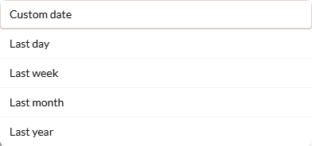
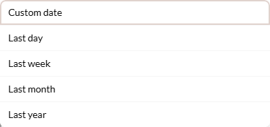
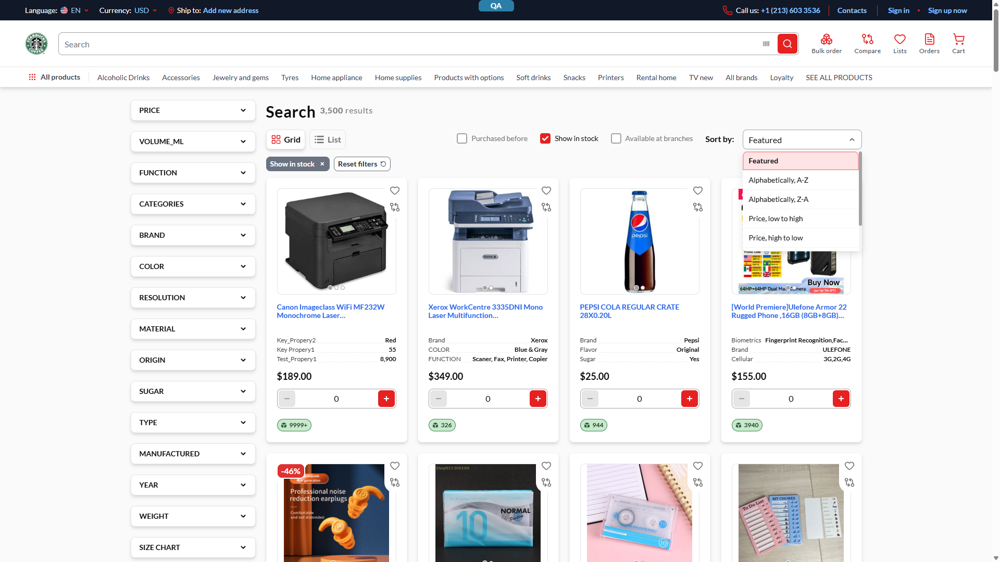

The VcSelect dropdown toggle rendered a raw <button> with bespoke
vc-select__arrow styling, and VcMenuItem drew its focus ring with a fixed
rounded radius and default offset — so the focus indicator did not match the control's
button styling or the item's own corner shape.
PR #2411 swaps the chevron for the shared VcButton (ghost neutral, disabled wiring
preserved, readonly still hides the arrow), and changes the menu-item focus to
-outline-offset-2 + rounded-[inherit] so the ring follows each item's
inherited radius. Two files: vc-select.vue, vc-menu-item.vue.

rounded ring

/search Sort-by open, "Featured" keyboard-focused; ring follows the rounded top corner| Target | outline | offset | radius | :focus-visible | Verdict |
|---|---|---|---|---|---|
Toggle chevron = VcButton ghost neutral | 3px solid | 0px | 6px | — | ✔ |
| Menu item — top (rounded) | 2px solid | -2px | 8px 8px 0 0 | true | ✔ |
| Menu item — middle (square) | 2px solid | -2px | 0 | true | ✔ |
Toggle class on the fixed build:
vc-button … vc-button--ghost--neutral vc-button--icon vc-select__arrow — the shared button, not the old raw element.
The -2px offset + inherited radius confirm both fix aspects; identical across all 3 STR runs.
?sort=name-ascending, combobox value persists2407 at session start plus the prior QA
BEFORE-* captures & the reporter's ticket screenshots. Evidence:
reports/tickets/VCST-5514/screenshots/. Deploy PR
vc-deploy-dev#6266 (theme→2411) still open; the
vcst-qa branch already carries the pin and the artifact is live.